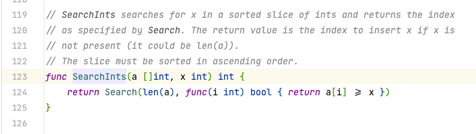

代码随想录算法训练营第一天| 704. 二分查找、27. 移除元素。 704. 二分查找
题目链接：leetcode链接
文章讲解：代码随想录(programmercarl.com)
视频讲解：手把手带你撕出正确的二分法 | 二分查找法 | 二分搜索法 | LeetCode：704. 二分查找
状态：AC
思路 看了卡哥的文档，才注意到二分查找也有两种写法。”要熟悉 根据 左闭右开，左闭右闭 两种区间规则 写出来的二分法 “。回头看自己的代码是左闭右闭的写法，再改写成左闭右开也不难，只需要更改边界条件即可。
代码 1 2 3 4 5 6 7 8 9 10 11 12 13 14 15 16 17 18 func search (nums []int , target int ) int {0 len (nums) - 1 var mid int for left <= right {2 if nums[mid] < target {1 else if nums[mid] > target {1 else {return midreturn -1
1 2 3 4 5 6 7 8 9 10 11 12 13 14 15 16 17 func search1 (nums []int , target int ) int {0 len (nums)var mid int for left < right {2 if nums[mid] < target {1 else if nums[mid] > target {else {return midreturn -1
27. 移除元素
题目链接：leetcode链接
文章讲解：代码随想录(programmercarl.com)
视频讲解：数组中移除元素并不容易！ | LeetCode：27. 移除元素
状态：AC
思路 第一眼看到时，题目要求”不要使用额外的数组空间，你必须仅使用 O(1) 额外空间并 原地修改输入数组 “。能想到的就是将待删除的后面的元素向前移动达到删除效果，但是时间复杂度为O(n^2)。再向下看到了示例：
示例 1：
输入：nums = [3,2,2,3], val = 3
示例 2：
输入：nums = [0,1,2,2,3,0,4,2], val = 2
看到这里大概理解了，想到的解法是双指针，方法也有两种。
方法一：
左右指针均从头开始，右指针每次向前一步
若右指针的值为val，那么跳过；否则将右指针的值给左指针，左指针++
返回左指针所在的索引
方法二：
左指针从前开始，右指针从后开始，左指针找val，右指针找非val
右指针的值给左指针
返回左指针所在的索引
代码 1 2 3 4 5 6 7 8 9 10 11 12 func removeElement (nums []int , val int ) int {len (nums)0 for right := 0 ; right < n; right++ {if nums[right] != val {return left
1 2 3 4 5 6 7 8 9 10 11 12 13 14 15 16 17 18 19 20 21 22 23 24 25 26 27 func removeElement (nums []int , val int ) int {0 len (nums) - 1 for left <= right {for left <= right {if nums[left] == val {break else {for left <= right {if nums[right] != val {break else {if left < right {return left
方法二还是的边界条件有点绕的，自己把自己绕进去了
附加题 35. 搜索插入位置
题目链接：35. 搜索插入位置
状态：AC
思路 查找，而且是有序，不难想到二分查找。这不过这里不是匹配的情况，而是有可能不匹配。无论是否匹配，只需返回左边界即可。
代码 1 2 3 4 5 6 7 8 9 10 11 12 13 14 15 16 func searchInsert (nums []int , target int ) int {0 len (nums) - 1 var mid int for left <= right {2 if nums[mid] == target {return midelse if nums[mid] < target {1 else {1 return left
附加题34.在排序数组中查找元素的第一个和最后一个位置
题目链接：34.在排序数组中查找元素的第一个和最后一个位置
状态：AC
思路 通过两次二分查找找到target在数组中的起始和结束位置，实现了函数binary可以两次调用。但是判断起始位置和结束位置需要额外的判断条件：
起始：需要判断num[mid-1]<target，或者mid==0（第0个元素就是起始位置），为了保证不越界，需要先判断mid==0的情况
结束：需要判断mid == len(nums)-1（最后一个元素是结束位置），或者nums[mid+1] > target
如果没有找到该元素，则返回-1。由于起始和介绍条件判断有些不同，binary函数中使用了flag来区分是进行起始元素查找还是结束元素查找的条件。若是true则为查找起始元素
代码 1 2 3 4 5 6 7 8 9 10 11 12 13 14 15 16 17 18 19 20 21 22 23 24 25 26 27 28 29 30 31 32 33 34 35 36 37 func searchRange (nums []int , target int ) int {int {}var temp int true )if temp == -1 { return []int {-1 , -1 }else {append (result, temp)append (result, binary(nums, target, false ))return resultfunc binary (nums []int , target int , flag bool ) int {0 len (nums) - 1 for left <= right {2 if flag {if nums[mid] == target && (mid == 0 || nums[mid-1 ] < target) {return midelse if nums[mid] < target {1 else {1 else {if nums[mid] == target && (mid == len (nums)-1 || nums[mid+1 ] > target) {return midelse if nums[mid] <= target {1 else {1 return -1
官方解法 Go语言版本 1 2 3 4 5 6 7 8 9 10 11 12 13 func searchRange (nums []int , target int ) int {if leftmost == len (nums) || nums[leftmost] != target {return []int {-1 , -1 }1 ) - 1 return []int {leftmost, rightmost}
sort.SearchInts()函数没有接触过，看看源码

SearchInts在整型数组的有序切片中搜索x，并返回由Search指定的索引。如果x不存在，返回值是插入x的索引(可以是len(a))。
C++版本 1 2 3 4 5 6 7 8 9 10 11 12 13 14 15 16 17 18 19 20 21 22 23 24 25 26 27 28 29 30 class Solution { public :int binarySearch (vector<int >& nums, int target, bool lower) int left = 0 , right = (int )nums.size () - 1 , ans = (int )nums.size ();while (left <= right) {int mid = (left + right) / 2 ;if (nums[mid] > target || (lower && nums[mid] >= target)) {1 ;else {1 ;return ans;vector<int > searchRange (vector<int >& nums, int target) {int leftIdx = binarySearch (nums, target, true );int rightIdx = binarySearch (nums, target, false ) - 1 ;if (leftIdx <= rightIdx && rightIdx < nums.size () && nums[leftIdx] == target && nums[rightIdx] == target) {return vector<int >{leftIdx, rightIdx};return vector<int >{-1 , -1 };
官方题解在找结束元素是找到了下一位，可以通过减一操作得到正确答案。但是他们实现的二分函数的true和false对条件控制的很巧妙。
小结
今天总用时三个小时多一些，做了四道题，感觉良好。第一天结束！！